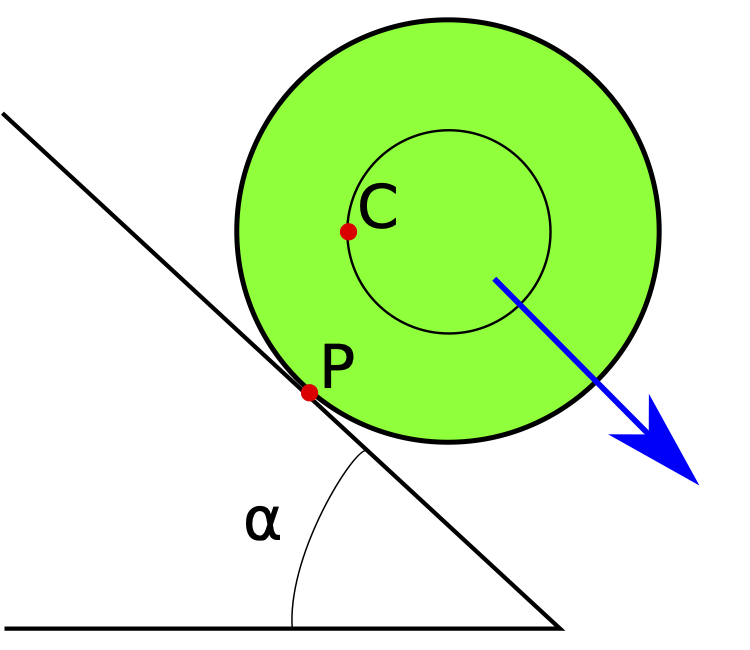

|
Catastrophe theory is the classification of isolated degenerate critical points. The theory is important for a wide range of fields in mathematics and science. However, it can be difficult to get started. While the theorems can be stated in elementary terms, and there are many expositions of the applications, the proofs require a solid foundation in mathematics. In these notes, I will state the main theorems and give a flavour of the underlying mathematics. For a complete, accessible, and rigorous treatment of catastrophe theory I recommend Catastrophe Theory by Domenico Castrigiano and Sandra Hayes to which I will refer in these notes.
A smooth function \(f: U \to \mathbb{R}\), with \(U\) an open subset of \(\mathbb{R}^n\) including the origin \(\boldsymbol{0}\), has a critical point at the origin when its gradient vanishes at this point, i.e.,
\[D f(\boldsymbol{0}) = (\partial_1 f(\boldsymbol{0}), \dots, \partial_n f(\boldsymbol{0})) =\boldsymbol{0},\]
with the partial derivative \(\partial_i f = \frac{\partial f}{\partial x_i}.\) The character of the critical point is often determined by the second-order derivative in the form of the Hessian matrix
\[D^2 f(\boldsymbol{0}) = \begin{pmatrix} \partial_{1}^2 f(\boldsymbol{0}) & \partial_1 \partial_2 f(\boldsymbol{0}) & \dots & \partial_1 \partial_n f(\boldsymbol{0})\\ \partial_2 \partial_1 f(\boldsymbol{0}) & \partial_{2}^2 f(\boldsymbol{0}) & \dots & \partial_2 \partial_n f(\boldsymbol{0})\\ \vdots & \vdots & \ddots & \vdots\\ \partial_n \partial_1 f(\boldsymbol{0}) & \partial_n \partial_2 f(\boldsymbol{0}) & \dots & \partial_{n}^2 f(\boldsymbol{0}) \end{pmatrix}. \]
The rank – defined as the number of independent rows or columns – and the index – defined as the number of negative eigenvalues – of the Hessian matrix are independent of the choice of coordinates. That is to say, a coordinate transformation \(g(\boldsymbol{x}) = f(\psi(\boldsymbol{x}))\) – with a diffeomorphism \(\psi:U \to V\) with \(U\) and \(V\) open sets in \(\mathbb{R}^n\) – preserves the gradient, and the rank and index of the Hessian matrix at the critical point,
\[ \begin{align} D g(\boldsymbol{0}) &= D f(\boldsymbol{0}) D \psi(\boldsymbol{0}) = \boldsymbol{0},\\ D^2g(\boldsymbol{0}) &=(D \psi(\boldsymbol{0}))^T D^2f(\boldsymbol{0}) (D \psi(\boldsymbol{0})), \end{align} \]
where the first order derivative of the diffeomorphism \(\psi(\boldsymbol{x}) = (\psi_1(\boldsymbol{x}), \dots, \psi_n(\boldsymbol{x}))\) is defined as
\[D \psi(\boldsymbol{0}) = \begin{pmatrix} \partial_{1} \psi_1(\boldsymbol{0}) & \partial_1 \psi_2(\boldsymbol{0}) & \dots & \partial_1 \psi_n(\boldsymbol{0})\\ \partial_2 \psi_1(\boldsymbol{0}) & \partial_{2} \psi_2(\boldsymbol{0}) & \dots & \partial_2 \psi_n(\boldsymbol{0})\\ \vdots & \vdots & \ddots & \vdots\\ \partial_n \psi_1(\boldsymbol{0}) & \partial_n \psi_2(\boldsymbol{0}) & \dots & \partial_{n} \psi_n(\boldsymbol{0}) \end{pmatrix}. \]
The rank determines whether the critical points is degenerate or nondegenerate.
Definition: A critical point is nondegenerate when the Hessian matrix \(D^2 f\) is invertable (the rank \(r = n\)). When the Hessian matrix is not invertable, the critical point is degenerate (the rank \(r < n\)).
For a nondegenerate critical point, the index distinguishes between the maximum, minimum and saddle points.
Definition: A nondegenerate critical point is a minimum when the index \(s=0\), a maximum when the index \(s=n\), and saddle point of index \(s\) when \(0 < s < n\).
As we will show below, the index of a nondegenerate critical point fully classifies the critical point up to coordinate transformations. For degenerate critical points, both the rank and the index play an important role in the classification.
The classification of nondegenerate critical points is expressed by Morse lemma, first proven by Marston Morse in 1934. Note that the theorem was already anticipated by Arthur Cayley (1859) and James Clerk Maxwell (1870) in the study of contour lines in topography.
Morse lemma: Let \(f\) be a smooth function of \(n\) variables with a critical point at the origin with index \(s\). The critical point is nondegenerate if and only if there exists a local diffeomorphism \(\psi\) which preserves the origin \(\psi(\boldsymbol{0})=\boldsymbol{0}\) for which
\[f(\psi(\boldsymbol{x})) =f(\boldsymbol{0}) - x_1^2 - \dots - x_s^2 + x_{s+1}^2 + \dots + x_n^2\]
in the vicinity of the origin.
Proof: The Morse lemma is proven in many textbooks on function theory. I will here simply refer to chapter one of Catastrophe Theory by Domenico Castrigiano and Sandra Hayes.
In the one-dimensional case, the lemma states that any nondegenerate critical points at the origin is either locally equivalent to a maximum \(f =f(0) -x^2\) or a minimum \(f= f(0) + x^2\) (see figure 1).
|
|
More generally, the lemma states that for nondegenerate critical points, there exist coordinates for which the function locally coincides with its second Taylor polynomial at the origin. The index of the Hessian matrix completely classifies the nondegenerate critical points of a smooth real-valued function on \(\mathbb{R}^n\).
A function with only nondegenerate critical points is known as a Morse function. Morse functions are dense in the space of smooth functions, i.e., a generic function only includes nondegenerate critical points and a degenerate critical point decomposes into nondegenerate ones upon an infinitesimal perturbation of the function. As such, Morse functions play a fundamental role in both mathematics and many applications. Given these observations, one might doubt the relevance of the classification of degenerate points. However, as it turns out, degenerate critical points do frequently occur in applications when considering a family of continuously varying functions. Catastrophe theory extends Morse lemma to degenerate critical points. It describes the possible equivalence classes, determines how many terms in the Taylor series are required to distinguish a critical point, and shows how a critical point unfolds into nondegenerate critical points under a general perturbation.
Consider a continuous family of smooth function \(f_\boldsymbol{u}:U \to \mathbb{R}\) with \(U\) a open subset of \(\mathbb{R}^n\) and with the external parameter \(\boldsymbol{u} = (u_1,u_2,\dots, u_d)\). René Thom’s main theorem of catastrophe theory states that when the number of external parameters does not exceed four (\(d \leq 4\)), each ‘stable’ degenerate critical point is equivalent to one of the \(\boldsymbol{7}\) elementary catastrophes
\[x^3, x^4, x^5, x^6, x^3 + y^3, x^3 - x y^2, \text{ and } x^2 y + y^4,\]
up to coordinate transformations. These elementary catastrophes are known as the fold, cusp, swallowtail, butterfly, elliptic umbilic, hyperbolic umbilic, and parabolic umbilic catastrophes. The second major theorem of catastrophe theory describes how these degenerate critical points decompose into nondegenerate ones upon small perturbations. The unfolding of a critical point is versal when it includes all the possible ways in which the degenerate critical can decompose. The unfolding is universal when it is both versal and only uses a minimal number of parameters.
Before describing the proofs of these theorems, we colloquially apply the theory to several physical toy models to introduce the relevant concepts.
Catastrophe theory is manifest in many mechanical systems which reside in equilibrium, locally minimizing the potential energy. This is known as quasistatics. We will here describe a few applications for which the potential energy includes degenerate critical points, a point in configuration space at which a small perturbation can lead to catastrophic changes in the behaviour. However, catastrophe theory can also be found in other systems, including more general problems in mechanics and optics. This is not surprising as classical physical systems extremize the action and optical systems extremize the travel time.
Consider an inhomogeneous cylinder on an inclined slope for which the centre of mass is located off centre. For convenience, let’s consider a unit cylinder with unit mass, for which the centre of mass a radius \(0 < r <1\) from the centre of the cylinder, on an inclined hill with slope \(\alpha\). In this problem, the angle \(\Theta\) between the horizontal line and the line joining the centre of mass \(C\) and the centre of the cylinder is the dynamical variable. Note that the angle \(\Theta\) uniquely determines the position of the cylinder on the slope. The angle of the slope \(\alpha\) is the external parameter.
Depending on the slope \(\alpha\), we can distinguish four configurations. For a shallow slope, the system has two equilibrium configurations for which the centre of mass \(C\) is above the point of contact \(P\) (two left panels of figure 2). The configuration for which the centre of mass is below (above) the centre of the cylinder corresponds to a global minimum (maximum) of the potential energy. When the slope is increased above a critical value, equilibrium configurations disappear (the right panel of figure 2). The cylinder will roll down the hill. At the critical slope \(\alpha_c\), the two stable equilibrium configurations merge (see the central right panel of figure 2). This configuration, known as a fold catastrophe, is a special configuration, as an infinitesimal increase in the angle \(\alpha\) leads to a catastrophic change in the dynamics of the system. This is the final straw that broke the camel’s back.
|  |
To quantify the system, note that the potential energy of the system \(V\) is the gravitational potential of the centre of mass \(C\). When the cylinder is rolled uphill by an angle \(\Theta_0\), we observe that the centre of the cylinder is raised by a distance \(\Theta_0 \sin \alpha\) while the centre of mass moves down with respect to the centre of the cylinder by a distance \(r\sin \Theta_0\). The potential energy of the system is
\[V(\Theta, \alpha) = \Theta \sin \alpha - r \sin \Theta + \cos \alpha.\]
According to the equation of motion
\[\frac{\mathrm{d}^2\Theta}{\mathrm{d}t^2} = -\frac{\partial V}{\partial\Theta} = -\sin \alpha +r \cos \Theta\]
the cylinder is in an equilibrium configuration when
\[\cos \Theta = \frac{\sin \alpha}{r}.\]
For \(\alpha < \alpha_c\), with the critical angle \(\alpha_c=\arcsin r\), this equation has two real solutions corresponding to global maximum and minimum of \(V\). For \(\alpha > \alpha_0\), there is no stable configuration. Expanding the potential energy around the angle \(\alpha = \alpha_c\),
\[V(\Theta, \alpha) = \frac{r}{6 }\Theta^3 + (\alpha - \alpha_c)\Theta \cos \alpha_c + \cos \alpha + \mathcal{O}(\alpha-\alpha_c),\]
we discover the degenerate critical point corresponding to the fold catastrophe. As it turns out, this is the universal unfolding of the fold catastrophe. The normal form of the universal unfolding of the fold catastrophe is
\[x^3+ ux,\]
plotted in figure 3.
The Zeeman catastrophe machine is a good example of a mechanical system illustrating the cusp catastrophe (first introduced for this purpose by Christopher Zeeman (1969)). Consider a disk with the centre \(C\) (see figure 4). We allow the disk to freely rotate around its centre. Consider an elastic string connecting a fixed point \(A\) to a point \(S\) on the perimeter of the disk to a point \(P\) (see figure 4). The angle \(\Theta\) between the point \(A\), the centre of the disk \(C\), and the point \(S\) is the dynamical variable of the system. We observe the behaviour of the system as we change the position of the point \(P\). This is the external parameter of the system. We will assume the system to minimize the potential energy of the string.
Let’s gradually vary the position of the point \(P\). When the point \(P\) is in the far upper right, the point \(S\) will be above the centre \(C\). When we lower the point \(P\) to line \(AC\) while crossing the red curve, the angle \(\Theta\) will gradually change but will remain above the centre \(C\). As we lower the point further, we will observe a dramatic change in the angle \(\Theta\) when we pass the second red line. The point \(S\) will all of a sudden move to the lower hemisphere of the disk. This is a fold catastrophe, forming the fold line (red). Other than the situation discussed above, we can observe that the fold line has four non-differentiable points. These points are examples of the cusp catastrophe.
The potential energy of the Zeeman machine is given by
\[ \begin{align} V(\Theta, u, v) =&\ \left(\left[ \frac{17}{4} - 2 \cos \Theta\right]^{1/2} -1\right)^2 \\ &\ + \left(\left[(u+a)^2 + v^2 + \frac{1}{4} + (u+a)\cos\Theta - v \sin \Theta\right]^{1/2} - 1\right)^2, \end{align} \]
with the distance \(a\) between the points \(A\) and \(C\). When we Taylor expand the potential energy around the point \((u,v)=(0,0)\) we will discover that the potential energy is quartic in \(\Theta\), corresponding to the cusp catastrophe.
The universal unfolding of the cusp catastrophe is of the form
\[x^4 - u x^2 + v x\]
with up to three critical points satisfying the cubic equation
\[4 x^3 - 2u x + v = 0.\]
Figure 5 shows the geometry of this unfolding. As with Zeeman’s machine, the cusp caustic has hysteresis. When approaching the region in configuration space corresponding to two angles \(\Theta\), we arrive on either the lower or the upper sheet depending on whether we approached the region from positive or negative \(v\).
This can in particular be observed in the geometry of the potential energy for the different configurations (see figure 6). For positive \(v\) there is only a single minimum. For negative \(v\), we observe either a single minimum or a set of three critical points. The two minima correspond to the two possible equilibrium configurations. When we cross a fold line (red), one of the minima merges with the maximum. If the system resided in the local minimum before crossing the fold line, the system will suddenly roll to the global minimum.

|
Another physical system with catastrophes in the form of caustics can be found in optics. These caustic are regions in space where the intensity spikes and as such play a fundamental role in both lensing and reflection problems. To demonstrate the emergence of the fold and the cusp caustics in optics, consider the reflection of a beam of light by a circular mirror in the geometric approximation (figure 7). The caustic occurs as the envelope of the light paths. This caustic can be observed in the reflection of light in a coffee cup. For more details of the coffeecup caustic see Symmetries of the Coffeecup Caustic by Brendan Guilfoyle, Wilhelm Klingenberg. This caustic is incidently also relevant to the formation of rainbows. Each raindrop reflects the sun’s rays at its internal spahere to form a cone-like caustic. Different wavelengths lead to a slightly different cone due to the refractive nature of water. This refractive effect leads to the separation of colors which we observe in the sky. There is of course a lot more to the formation of rainbows. For a detailed description see Catastrophe theory and its applications by Tim Poston and Ian Stewart.
Fermat’s principle of least time provides a natural explanation for the relevance of catastrophes and caustics in optics. A path from the source to a point in space is a classical ray if and only if it is a real critical point of the time it takes to travel from the source to point in space. When the time function \(t\) has a number of critical points, the point receives light from multiple sources. The caustics correspond to the degenerate critical points of the time function. When the time function scales like \(t^3,\) we form a fold. The folds form lines in configuration space. When the time function scales like \(t^4,\) the point corresponds to a cusp caustic. These cusps are non-differentiable points on the fold lines.

Morse lemma shows that for nondegenerate critical point of a \(n\)-dimensional function there exist local coordinates for which the function is a sum of quadratic terms, its normal form. In catastrophe theory, mirrors this theorem for degenerate critical points. The reduction lemma (first proved in 1969 by D. Grommoll and W. Meyer) provides a first step towards such a theorem.
Reduction lemma: Around a degenerate critical point \(\boldsymbol{0}\) of a smooth function \(f\) of \(n\) variables with rank \(r\) and index \(s\), there exists a local diffeomorphism \(\psi\) preserving the origin, such that the function can be expressed as the sum
\[f(\psi(\boldsymbol{x})) = f(\boldsymbol{0}) + q_{sr}(x_1,\dots, x_r) +g(x_{r+1},\dots,x_{n}),\]
where \(q_{sr}\) is a nondegenerate normal form in \(r\) variables, vanishing at the origin, with a critical point at the origin with index \(s\), and \(g\) is a smooth function of \(n-r\) variables, vanishing at the origin, with a critical point at the origin that is totally degenerate (has vanishing rank). Note that using Morse lemma, we can select coordinates for which
\[q_{sr}(x_1,\dots, x_r) = -x_1^2 -\dots - x_s^2 + x_{s+1}^2+\dots + x_{r}^2.\]
The function \(g\) is known as the residual singularity of \(f\) at \(0\).
Proof: The proof of the reduction lemma is based on the diagonalization of symmetric matrices in many textbooks on catastrophe theory. I will here simply refer to chapter three of Catastrophe Theory by Domenico Castrigiano and Sandra Hayes.
Using the reduction lemma we can always write a degenerate critical point as a nondegenerate part, classified by the Morse lemma, and a part that is totally degenerate. This reduces the classification of degenerate critical points to the classification of totally degenerate ones. Note that when a degenerate critical point has rank \(r\), the residual singularity \(g\) will be a function of \(n-r\) variables, known as the corank of \(f\). It follows that the corank is a measure of the degree of degeneracy of the critical point.